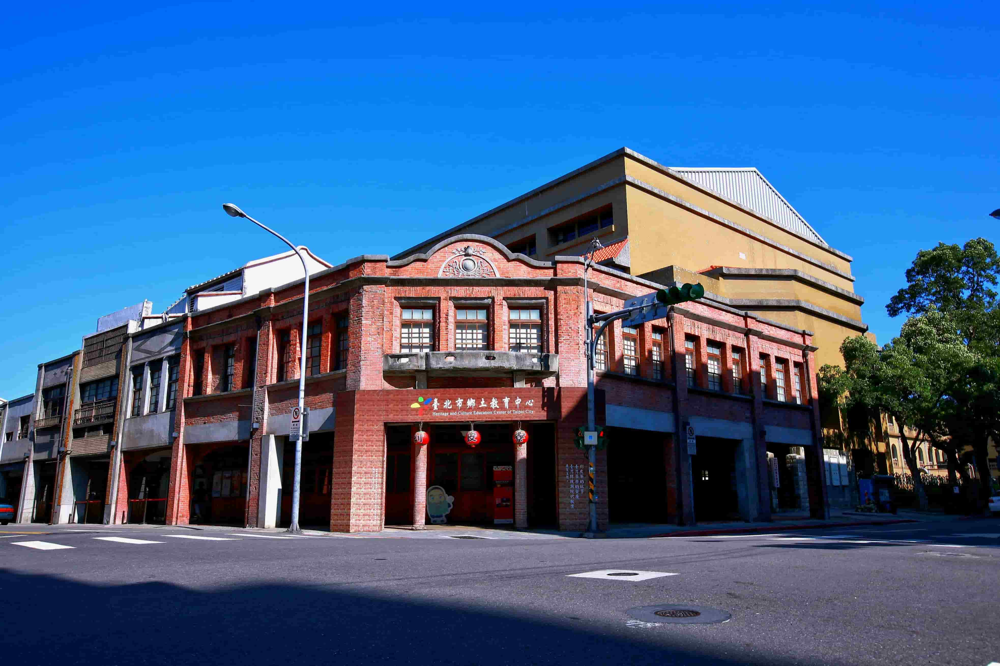

玖拾年代
龍山寺站-現今風貌
周圍景點-艋舺龍山寺
艋舺龍山寺，也稱萬華龍山寺，是位於臺灣臺北市萬華區富民里的觀音寺，為清治時期臺北城三邑人的信仰與政治、軍事中心，戰後時期成為外國旅客觀光景點，今建築列為國定古蹟。
“1896年，廟址作為臺北廳艋舺區長役場。同年，台北本島人紳商協會此創設。祭祀與當地商圈有密切關係，嘉慶年間有四大柱，分別是南安人的武榮媽祖會、屠宰業的螺陽公會、晉水媽祖會、金紙業的金晉興公會。戰後還有觀音會、念佛會、北郊金萬利、龍山商場、西義堂、金得利會、及張德寶號，這些民間團體散布在廣州街、西昌街、桂林路一帶。”

小知識

剝皮寮歷史街區
剝皮寮歷史街區（今康定路173巷）位於臺灣臺北市萬華區，北臨老松國小，東至昆明街，南面廣州街，西接康定路，為臺北市今日碩果僅存的清代街道之一，臺北市政府於2010年3月29日公告登錄為歷史建築。
“剝皮寮歷史街區以廣州街127巷為界分為東西側，臺北市鄉土教育中心為東側的專責單位，多為固定的常設展。西側修復再利用工程直到2009年6月19日才竣工，由教育局行政委託文化局經營，規劃為藝文特區。東西兩側分隸屬於不同單位，發展策略亦頗異，東側主要以鄉土教育與戶外教學，西側則以文藝展覽與協助影視拍攝為多。”
小知識